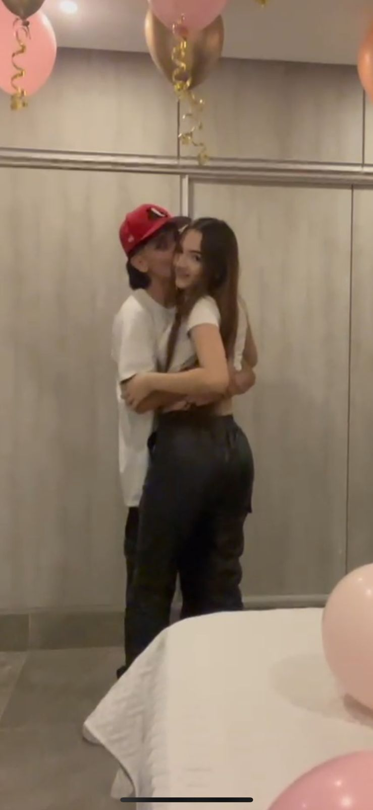
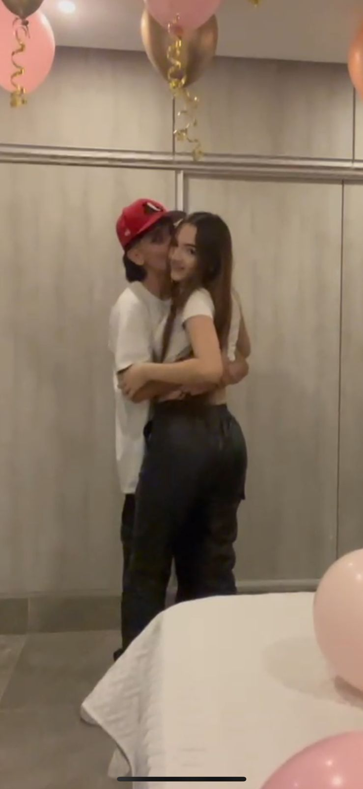
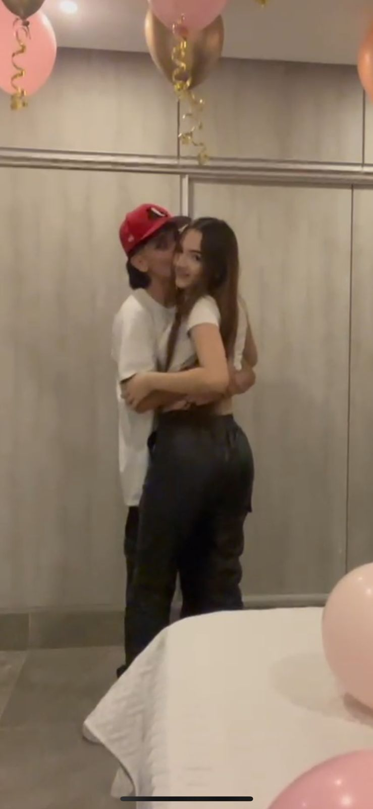
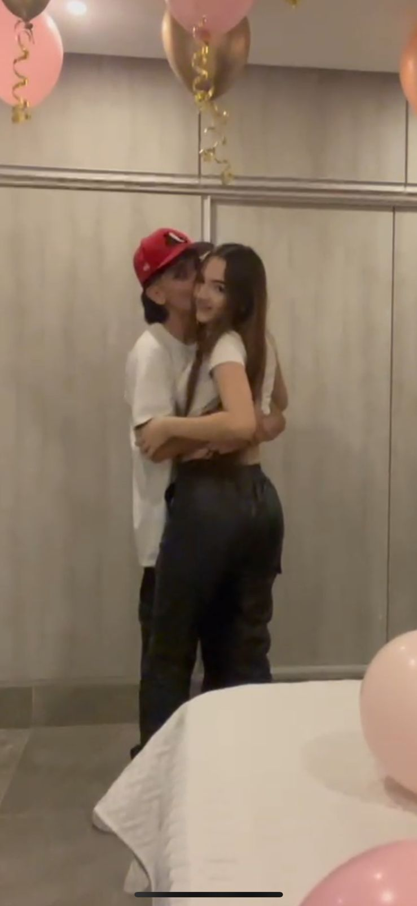

A pesar de todo lo que ha pasado, te sigo amando. S√© que tú tambi√©n. No fui el mejor en cuanto a saber c√≥mo tratarte, ni en mis acciones. Quise hacer todo bien, pero no cumpl√≠ esa promesa. Tienes toda la raz√≥n al no querer volver conmigo, pero quiero que no quedemos en que nos separamos por las peleas, ni mucho menos que digan que ya no estamos juntos. Quiero que nos vean y digan: "lo superaron juntos". Tú y yo estamos hechos el uno para el otro. √öltimamente he estado demasiado mal. No s√© c√≥mo hacer para que volvamos a estar como antes: cuando me llamabas, cuando me escrib√≠as por cualquier cosa, cuando demostrábamos estar enamorados. Quiero tener una oportunidad de poder demostrarte que quiero hacer todo mejor, empezar desde cero. No s√© c√≥mo hacerlo. Hasta te hice esta carta por internet, jaja. No s√© tampoco c√≥mo hacer para que conf√≠es en m√≠ de nuevo. S√© que te fall√©. Si, por cosas de la vida, no volvemos a estar juntos. Tambi√©n quiero que mantengas presente que te amo, que por ti dejar√≠a y dar√≠a todo para que est√©s feliz. Te quiero pedir perd√≥n desde el fondo de mi coraz√≥n, porque no estuve contigo cuando estabas mal, y s√© que lo hab√≠a prometido. Tuve muchos errores, y c√≥mo quisiera cambiarlos. tal vez sea dificl. Pero quiero volver a encender esa chispa. Recuerdo el d√≠a que hicimos la despedida y te promet√≠ que te iba a esperar hasta que llegaras, que por siempre te iba a amar. Me da miedo que pase el tiempo y dejes de amarme. S√© que no va a pasar, porque le pido a Dios que podamos salir de esto juntos. No quer√≠a que cuando llegaras a Medell√≠n estuvi√©ramos separados. Quer√≠a recibirte con un fuerte abrazo y, ese mismo d√≠a que te viera de nuevo, pedirte que fueras mi novia. Cr√©eme que, cuando te digo que no me veo con alguien que no seas tú, lo digo muy, muy en serio. No me digas que es tarde, porque s√© que tú tambi√©n quieres. S√© que nuestro amor puede superar cualquier cosa. Cr√©eme, no te voy a fallar. Quiero que sepas que quiero estar contigo, porque te amo y te quiero. quiero agradecerte por todo lo que has hecho en m√≠, por todos los momentos lindos que me diste, por hacerme sentir cosas que antes no, te acuerdas las noches que nos quedabamos despiertos hasta tarde?, pensaba que podria escuharte toda una vida sin aburrirme, nunca senti eso por nadie y ahi cai en cuenta que fue cuando me enamore prometeme que aunque esto no nos ayuede a volver, vas a cuidar de fede Siempre serás mi ni√±a de ojos lindos. ATT: tu monitoüíõ